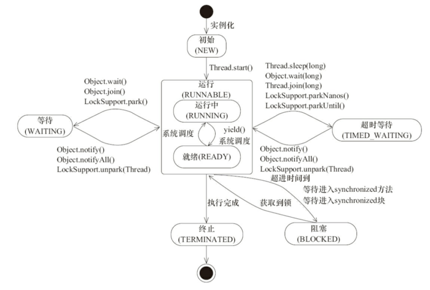
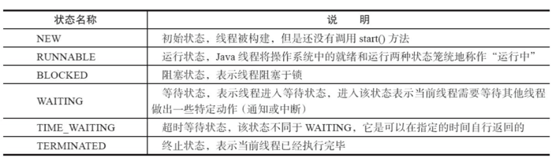
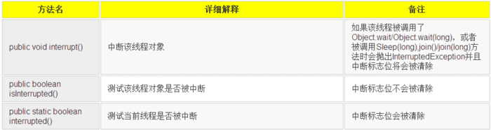

在上一篇文章中并发编程的优缺点谈到了为什么花功夫去学习并发编程的技术，也就是说我们必须了解到并发编程的优缺点，我们在什么情况下可以去考虑开启多个线程去实现我们的业务，当然使用多线程我们应该着重注意一些什么，在上一篇文章中会有一些讨论。那么，说了这么多，无论是针对面试还是实际工作中作为一名软件开发人员都应该具备这样的技能。万事开头难，接下来就应该了解如何新建一个线程？线程状态是怎样转换的？关于线程状态的操作是怎样的？这篇文章就主要围绕这三个方面来聊一聊。
1. 新建线程
一个java程序从main()方法开始执行，然后按照既定的代码逻辑执行，看似没有其他线程参与，但实际上java程序天生就是一个多线程程序，包含了：（1）分发处理发送给给JVM信号的线程；（2）调用对象的finalize方法的线程；（3）清除Reference的线程；（4）main线程，用户程序的入口。那么，如何在用户程序中新建一个线程了，只要有三种方式：
通过继承Thread类，重写run方法；
通过实现runable接口；
通过实现callable接口这三种方式，下面看具体demo。
xxxxxxxxxx1public class CreateThreadDemo {2public static void main(String[] args) {3//1.继承Thread4Thread thread = new Thread() {56public void run() {7System.out.println("继承Thread");8super.run();9}10};11thread.start();12//2.实现runable接口13Thread thread1 = new Thread(new Runnable() {1415public void run() {16System.out.println("实现runable接口");17}18});19thread1.start();20//3.实现callable接口21ExecutorService service = Executors.newSingleThreadExecutor();22Future<String> future = service.submit(new Callable() {2324public String call() throws Exception {25return "通过实现Callable接口";26}27});28try {29String result = future.get();30System.out.println(result);31} catch (InterruptedException e) {32e.printStackTrace();33} catch (ExecutionException e) {34e.printStackTrace();35}36}3738}
三种新建线程的方式具体看以上注释，需要主要的是：
- 由于java不能多继承可以实现多个接口，因此，在创建线程的时候尽量多考虑采用实现接口的形式；
- 实现callable接口，提交给ExecutorService返回的是异步执行的结果，另外，通常也可以利用FutureTask(Callable
callable)将callable进行包装然后FeatureTask提交给ExecutorsService。如图，

另外由于FeatureTask也实现了Runable接口也可以利用上面第二种方式（实现Runable接口）来新建线程；
- 可以通过Executors将Runable转换成Callable，具体方法是：Callable
callable(Runnable task, T result)， Callable
2. 线程状态转换

此图来源于《JAVA并发编程的艺术》一书中，线程是会在不同的状态间进行转换的，java线程线程转换图如上图所示。线程创建之后调用start()方法开始运行，当调用wait()，join()，LockSupport.lock()方法线程会进入到WAITING状态，而同样的wait(long timeout)，sleep(long)，join(long)，LockSupport.parkNanos()，LockSupport.parkUtil()增加了超时等待的功能，也就是调用这些方法后线程会进入TIMED_WAITING状态，当超时等待时间到达后，线程会切换到Runable的状态，另外当WAITING和TIMED _WAITING状态时可以通过Object.notify(),Object.notifyAll()方法使线程转换到Runable状态。当线程出现资源竞争时，即等待获取锁的时候，线程会进入到BLOCKED阻塞状态，当线程获取锁时，线程进入到Runable状态。线程运行结束后，线程进入到TERMINATED状态，状态转换可以说是线程的生命周期。另外需要注意的是：
- 当线程进入到synchronized方法或者synchronized代码块时，线程切换到的是BLOCKED状态，而使用java.util.concurrent.locks下lock进行加锁的时候线程切换的是WAITING或者TIMED_WAITING状态，因为lock会调用LockSupport的方法。
用一个表格将上面六种状态进行一个总结归纳。

3. 线程状态的基本操作
除了新建一个线程外，线程在生命周期内还有需要基本操作，而这些操作会成为线程间一种通信方式，比如使用中断（interrupted）方式通知实现线程间的交互等等，下面就将具体说说这些操作。
3.1. interrupted
中断可以理解为线程的一个标志位，它表示了一个运行中的线程是否被其他线程进行了中断操作。中断好比其他线程对该线程打了一个招呼。其他线程可以调用该线程的interrupt()方法对其进行中断操作，同时该线程可以调用 isInterrupted（）来感知其他线程对其自身的中断操作，从而做出响应。另外，同样可以调用Thread的静态方法 interrupted（）对当前线程进行中断操作，该方法会清除中断标志位。需要注意的是，当抛出InterruptedException时候，会清除中断标志位，也就是说在调用isInterrupted会返回false。

下面结合具体的实例来看一看
301public class InterruptDemo {2 public static void main(String[] args) throws InterruptedException {3 //sleepThread睡眠1000ms4 final Thread sleepThread = new Thread() {5 6 public void run() {7 try {8 Thread.sleep(1000);9 } catch (InterruptedException e) {10 e.printStackTrace();11 }12 super.run();13 }14 };15 //busyThread一直执行死循环16 Thread busyThread = new Thread() {17 18 public void run() {19 while (true) ;20 }21 };22 sleepThread.start();23 busyThread.start();24 sleepThread.interrupt();25 busyThread.interrupt();26 while (sleepThread.isInterrupted()) ;27 System.out.println("sleepThread isInterrupted: " + sleepThread.isInterrupted());28 System.out.println("busyThread isInterrupted: " + busyThread.isInterrupted());29 }30}输出结果
sleepThread isInterrupted: false busyThread isInterrupted: true
开启了两个线程分别为sleepThread和BusyThread, sleepThread睡眠1s，BusyThread执行死循环。然后分别对着两个线程进行中断操作，可以看出sleepThread抛出InterruptedException后清除标志位，而busyThread就不会清除标志位。
另外，同样可以通过中断的方式实现线程间的简单交互， while (sleepThread.isInterrupted()) 表示在Main中会持续监测sleepThread，一旦sleepThread的中断标志位清零，即sleepThread.isInterrupted()返回为false时才会继续Main线程才会继续往下执行。因此，中断操作可以看做线程间一种简便的交互方式。一般在结束线程时通过中断标志位或者标志位的方式可以有机会去清理资源，相对于武断而直接的结束线程，这种方式要优雅和安全。
3.2. join
join方法可以看做是线程间协作的一种方式，很多时候，一个线程的输入可能非常依赖于另一个线程的输出，这就像两个好基友，一个基友先走在前面突然看见另一个基友落在后面了，这个时候他就会在原处等一等这个基友，等基友赶上来后，就两人携手并进。其实线程间的这种协作方式也符合现实生活。在软件开发的过程中，从客户那里获取需求后，需要经过需求分析师进行需求分解后，这个时候产品，开发才会继续跟进。如果一个线程实例A执行了threadB.join(),其含义是：当前线程A会等待threadB线程终止后threadA才会继续执行。关于join方法一共提供如下这些方法:
public final synchronized void join(long millis) public final synchronized void join(long millis, int nanos) public final void join() throws InterruptedException
Thread类除了提供join()方法外，另外还提供了超时等待的方法，如果线程threadB在等待的时间内还没有结束的话，threadA会在超时之后继续执行。join方法源码关键是：
31 while (isAlive()) {2 wait(0);3 }可以看出来当前等待对象threadA会一直阻塞，直到被等待对象threadB结束后即isAlive()返回false的时候才会结束while循环，当threadB退出时会调用notifyAll()方法通知所有的等待线程。下面用一个具体的例子来说说join方法的使用：
281public class JoinDemo {2 public static void main(String[] args) {3 Thread previousThread = Thread.currentThread();4 for (int i = 1; i <= 10; i++) {5 Thread curThread = new JoinThread(previousThread);6 curThread.start();7 previousThread = curThread;8 }9 }1011 static class JoinThread extends Thread {12 private Thread thread;1314 public JoinThread(Thread thread) {15 this.thread = thread;16 }1718 19 public void run() {20 try {21 thread.join();22 System.out.println(thread.getName() + " terminated.");23 } catch (InterruptedException e) {24 e.printStackTrace();25 }26 }27 }28}输出结果为：
main terminated. Thread-0 terminated. Thread-1 terminated. Thread-2 terminated. Thread-3 terminated. Thread-4 terminated. Thread-5 terminated. Thread-6 terminated. Thread-7 terminated. Thread-8 terminated.
在上面的例子中一个创建了10个线程，每个线程都会等待前一个线程结束才会继续运行。可以通俗的理解成接力，前一个线程将接力棒传给下一个线程，然后又传给下一个线程......
3.3 sleep
public static native void sleep(long millis)方法显然是Thread的静态方法，很显然它是让当前线程按照指定的时间休眠，其休眠时间的精度取决于处理器的计时器和调度器。需要注意的是如果当前线程获得了锁，sleep方法并不会失去锁。sleep方法经常拿来与Object.wait()方法进行比价，这也是面试经常被问的地方。
sleep() VS wait()
两者主要的区别：
- sleep()方法是Thread的静态方法，而wait是Object实例方法
- wait()方法必须要在同步方法或者同步块中调用，也就是必须已经获得对象锁。而sleep()方法没有这个限制可以在任何地方种使用。另外，wait()方法会释放占有的对象锁，使得该线程进入等待池中，等待下一次获取资源。而sleep()方法只是会让出CPU并不会释放掉对象锁；
- sleep()方法在休眠时间达到后如果再次获得CPU时间片就会继续执行，而wait()方法必须等待Object.notift/Object.notifyAll通知后，才会离开等待池，并且再次获得CPU时间片才会继续执行。
3.4 yield
public static native void yield(); 这是一个静态方法，一旦执行，它会是当前线程让出CPU，但是，需要注意的是，让出的CPU并不是代表当前线程不再运行了，如果在下一次竞争中，又获得了CPU时间片当前线程依然会继续运行。另外，让出的时间片只会分配给当前线程相同优先级的线程。什么是线程优先级了？下面就来具体聊一聊。
现代操作系统基本采用时分的形式调度运行的线程，操作系统会分出一个个时间片，线程会分配到若干时间片，当前时间片用完后就会发生线程调度，并等待这下次分配。线程分配到的时间多少也就决定了线程使用处理器资源的多少，而线程优先级就是决定线程需要或多或少分配一些处理器资源的线程属性。
在Java程序中，通过一个整型成员变量Priority来控制优先级，优先级的范围从1~10.在构建线程的时候可以通过setPriority(int)方法进行设置，默认优先级为5，优先级高的线程相较于优先级低的线程优先获得处理器时间片。需要注意的是在不同JVM以及操作系统上，线程规划存在差异，有些操作系统甚至会忽略线程优先级的设定。
另外需要注意的是，sleep()和yield()方法，同样都是当前线程会交出处理器资源，而它们不同的是，sleep()交出来的时间片其他线程都可以去竞争，也就是说都有机会获得当前线程让出的时间片。而yield()方法只允许与当前线程具有相同优先级的线程能够获得释放出来的CPU时间片。
4.守护线程Daemon
守护线程是一种特殊的线程，就和它的名字一样，它是系统的守护者，在后台默默地守护一些系统服务，比如垃圾回收线程，JIT线程就可以理解守护线程。与之对应的就是用户线程，用户线程就可以认为是系统的工作线程，它会完成整个系统的业务操作。用户线程完全结束后就意味着整个系统的业务任务全部结束了，因此系统就没有对象需要守护的了，守护线程自然而然就会退。当一个Java应用，只有守护线程的时候，虚拟机就会自然退出。下面以一个简单的例子来表述Daemon线程的使用。
271public class DaemonDemo {2 public static void main(String[] args) {3 Thread daemonThread = new Thread(new Runnable() {4 5 public void run() {6 while (true) {7 try {8 System.out.println("i am alive");9 Thread.sleep(500);10 } catch (InterruptedException e) {11 e.printStackTrace();12 } finally {13 System.out.println("finally block");14 }15 }16 }17 });18 daemonThread.setDaemon(true);19 daemonThread.start();20 //确保main线程结束前能给daemonThread能够分到时间片21 try {22 Thread.sleep(800);23 } catch (InterruptedException e) {24 e.printStackTrace();25 }26 }27}输出结果为：
i am alive finally block i am alive
上面的例子中daemodThread run方法中是一个while死循环，会一直打印,但是当main线程结束后daemonThread就会退出所以不会出现死循环的情况。main线程先睡眠800ms保证daemonThread能够拥有一次时间片的机会，也就是说可以正常执行一次打印“i am alive”操作和一次finally块中"finally block"操作。紧接着main 线程结束后，daemonThread退出，这个时候只打印了"i am alive"并没有打印finnal块中的。因此，这里需要注意的是守护线程在退出的时候并不会执行finnaly块中的代码，所以将释放资源等操作不要放在finnaly块中执行，这种操作是不安全的
线程可以通过setDaemon(true)的方法将线程设置为守护线程。并且需要注意的是设置守护线程要先于start()方法，否则会报
Exception in thread "main" java.lang.IllegalThreadStateException at java.lang.Thread.setDaemon(Thread.java:1365) at learn.DaemonDemo.main(DaemonDemo.java:19)
这样的异常，但是该线程还是会执行，只不过会当做正常的用户线程执行。